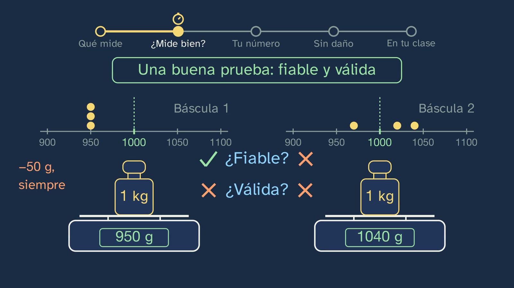
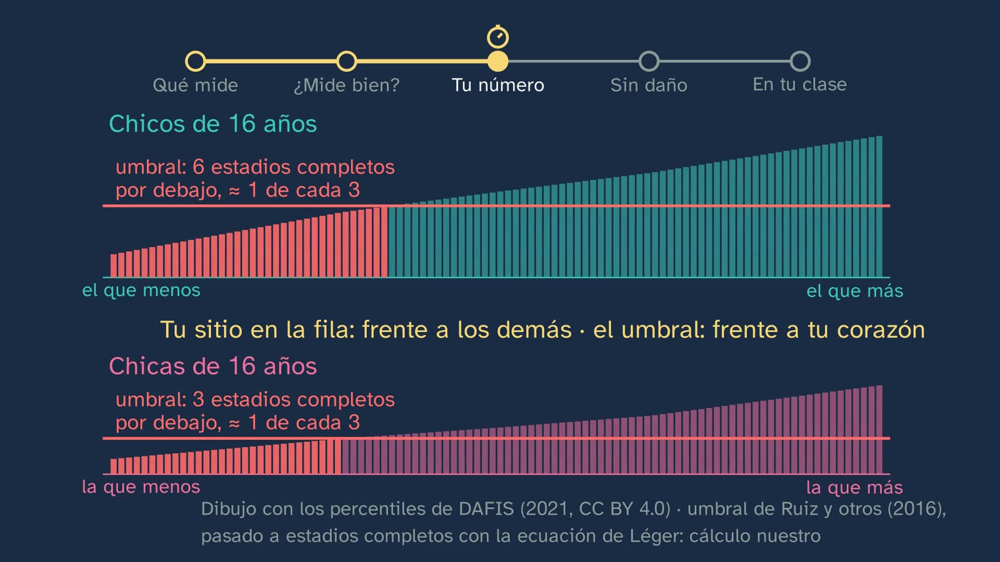

Measuring yourself without getting hurt
In a nutshell
The class answers the puzzle the previous one ended with: if your maximum heart rate can only be measured by going to exhaustion, how is your fitness measured without getting hurt, and how far can you trust your number?
The thread is a test that almost every student has run: the beep test (the 20 m shuttle run, course navette). It is heard for real: the beeps, synthesised from the protocol, with a runner going from line to line at the test's speed. Students predict how long a shuttle takes at stage 1 and at stage 10 (8.5 and 5.5 s). The test is by Luc Léger, of the University of Montreal: his first published version, from 1982, was for adults; the one for schoolchildren, with one stage every minute, is today's.
What each test measures. Measuring yourself for health is not measuring yourself to compete. The ALPHA-Fitness battery (presented in 2011 by the University of Granada and the Karolinska Institute, in a project funded by the European Union) fills four boxes: heart and lungs (the beep test), muscles (handgrip strength and the standing long jump), how you move (the 4 × 10 m shuttle run) and body composition (height, weight and waist). And each test, up close, with how it is done according to the manual and what it tells you: handgrip strength with the manual's dynamometer (standing, arm straight and not touching the body, the grip adjusted to the hand, at least 2 s; two attempts with each hand and the best of each): the strength of the hand and forearm, and a quick idea of overall strength (Wind et al., 2010); the standing long jump, with Muybridge's (1887) and the one from real motion capture (CMU), in slow motion (two attempts, from the line to the nearest heel): the explosive strength of the legs; the 4 × 10 m, shuttle by shuttle, swapping the sponges (two attempts, the best time): speed, agility and coordination, the decree's coordination capacities; and body composition: the body mass index, from height and weight, and the waist, which gives an idea of abdominal fat, the kind most linked to cardiovascular risk (data verification, rows E and N). Why those: simple, safe with their protocol and, in the case of aerobic capacity, linked to future health (Ruiz et al., 2009). In 2024, 169 experts from 50 countries kept four (YFIT).
Does it measure well? Reliable and valid, with two kitchen scales and a 1 kg weight of the kind used to check scales (a packet of flour doesn't have to weigh exactly a kilo): each weighing leaves its dot on a line. The validity of the beep test against the lab (maximal oxygen uptake, measured with a mask), Léger's equation read term by term (speed adds; age, overall, subtracts, and that makes sense because of running economy) and its margin (about 6 ml/kg/min). Reliability, repeated in Spanish schools (España-Romero et al., 2010) and in a review of 32 studies (Artero et al., 2011): that is why it is useful for tracking yourself.
Your number. The percentile as your place in a line of a hundred people of your age and sex, with real data from DAFIS (Galicia) and its agreement with HELENA; why there are tables for girls and for boys (and how much they overlap); that each test has its own table (at 16, the one in the middle: 148 and 193 cm in the jump, 48 and 70 kg in handgrip with both hands, 12.8 and 11.2 s in the 4 × 10 m, girls and boys), and that in the 4 × 10 m less is better, so the 10th percentile is among the fastest; body composition is not ranked: it is looked at in private; the other reading, against the health threshold of Ruiz et al. (2016): in the line, roughly one in three, boys and girls, falls below it. And the most useful thing: comparing yourself with yourself, because aerobic fitness can be trained.
Without getting hurt. The manual's protocol (before, during and the test itself, which ends at your limit), body composition in private and the counterweight: moving is much safer than not moving (Warburton et al., 2011). The typical mistake: "a fitness test is, above all, a grade". The open question, with no verdict: should your score count towards your grade?
Objective. By the end, students will know what each test in the ALPHA-Fitness battery measures (endurance, strength, coordination and body composition), what it means for a test to be valid and reliable, how to read their result as a percentile and which tests are only done in class, with their teacher.
For readers outside Spain: the Bachillerato is the last two years of secondary school (ages 16–18); it follows ESO, the four years of compulsory secondary education (ages 12–16). Physical Education is a core subject, taken by every student in the first year of Bachillerato. The BOE is Spain's Official State Gazette, where every law and decree is published. Spain is divided into seventeen autonomous communities (regions), plus the autonomous cities of Ceuta and Melilla; each completes the national curriculum with its own. Galicia, where the DAFIS study was carried out, is in the north-west, and this sheet quotes the secondary curriculum of Catalonia, in the north-east. The video is in Spanish, with English subtitles; the images on this sheet come from the video and keep their Spanish text: the board calls the beep test «la de los pitidos» or «ida y vuelta de 20 m», and in Léger's equation V is the speed (velocidad) and E the age (edad). In Spain the decimal separator is a comma: the board writes 8,5 for 8.5; this sheet uses a point. Spanish and Catalan documents (the decrees) are quoted in our translation; English sources are quoted in the original.
Curriculum
Spain's Royal Decree 243/2022, Physical Education, a core subject in the first year of Bachillerato. Quotations checked in the lab's copy of the BOE's consolidated text (checked on 05/10/2026, when the topic was designed). Our translation of the official Spanish text.
| Element | What the decree says | Where the class works on it |
|---|---|---|
| Core knowledge (block A, "Active and healthy life", physical health) | "Self-assessment of physical and coordination capacities (as a prerequisite for planning): techniques, strategies and measuring tools." | The whole class: the tools (the ALPHA-Fitness battery, 5:13–9:00), how far to trust them (9:00–13:18) and how their result is read (13:27–17:48); the decree's own sentence takes apart the typical mistake (19:54) |
| Specific competence 1 | "To internalise the development of an active and healthy lifestyle, planning their physical activity responsibly and consciously on the basis of personal self-assessment according to scientific and assessable parameters…" | Self-assessment with scientific parameters: what each test measures, how far off it can be and what it is read against (percentile, health threshold, yourself) |
| STEM2 descriptor (of CE1) | "… appreciating the importance of precision and truthfulness and showing a critical attitude towards the scope and limitations of the methods used." | The moderate validity of Léger's equation and its margin (10:50–12:43); the scoring rules (14:23) |
| Criterion 1.1 | "To plan, design and put into practice autonomously a personal physical activity programme […] evaluating the results obtained." | The measurable starting point for the topic 3 programme: your class numbers, repeated in a few months (17:12 and 20:33) |
| Criterion 1.4 | "… applying with autonomy and independence scientific criteria of validity, reliability and objectivity to the information received." | Reliable and valid, with the scales (9:00–10:14); the validity of the beep test (10:14–12:43) and the reliability of the battery (12:43) |
The decree does not name any test. The ALPHA-Fitness battery is how the channel makes "techniques, strategies and measuring tools" concrete (topic sheet). ESO already brings the "scientific criteria of validity, reliability and objectivity" (criterion 1.5 in years 3 and 4): the class retrieves them and applies them to a specific test, with numbers.
What students need to bring. From class 2, that the maximum is measured by going to exhaustion, that a formula gives an average with its margin, and how to take the pulse; from ESO, warming up, and validity and reliability. For the equation, adding and multiplying with a calculator.
How the class is built
Video chapters
| Part | What happens | Why this way |
|---|---|---|
| What you already know and the solutions | Can you measure your maximum on your own? (0:23, pause): no, and that leads to today's question. The three solutions from class 2, each with its exercise and the real NHANES pulses (0:55–2:44) | Retrieval (Roediger and Karpicke, 2006) with the idea that opens the class |
| The beep test | The hook (2:44); where it comes from (2:52); what it is like, with the real runner (CMU); the prediction (3:36) and the beeps, which are heard (3:51–4:22); why it speeds up and when it ends (4:22) | Predict before seeing; the protocol turned into something you hear |
| The mission | Five steps, with their route shown at the top (4:51) | Each change of part, announced |
| What each test measures | Health or competition; the four empty boxes (5:13); ALPHA-Fitness and how it was chosen (5:35); each test up close, with its protocol and what it tells you: handgrip (6:12), Muybridge's jump and the motion-capture one (6:39), the 4 × 10 m (7:16) and body composition (7:50); why those (8:16); YFIT, with the four boxes full (8:44) | First the empty form and then what fills it; what is real, shown big |
| Does it measure well? | Two scales (9:00–10:14, stop and think at 9:31); validity against the lab (10:14–11:27); the equation with its slider, read term by term (11:27–12:19), and its margin (12:19); reliability (12:43) | The study card before the result; thinking about what is calculated (ADR-099): age in the equation |
| Midpoint | Isidora: "these tests are reliable, and almost all of them valid; but they give an estimate" (13:18) | |
| Your number | The percentile as your place in the line (13:27–14:09); where is the one in the middle? (14:09, pause); DAFIS and HELENA (14:23); your stage 6 for a boy and for a girl, and why two tables (14:55); each test, its table, and in the 4 × 10 m less is better (15:46); the health threshold (16:30); compare yourself with yourself, and it can be trained (17:12) | Each person, a place; girls and boys always in pairs |
| Without getting hurt | The protocol in three columns, with the track in motion and someone watching (17:48–19:22); the questionnaire (18:11); body composition, in private (19:22); the counterweight (19:36) | Safety as a gesture, not as a list |
| The typical mistake | "It is, above all, a grade", taken apart with the decree itself (19:54–20:33) | The mistake, in plain view (Muller et al., 2008); no verdict on the open question |
| In your class and practice | Your class numbers, with a complete example compared months later (in the 4 × 10 m, less is better), and the tables, with the way out for anyone who shouldn't do them (20:33); who measures for a living (21:17); the summary, three exercises, the open question and the puzzle for class 4 (21:31–23:50) | Spacing: exercise 2 goes back to class 2 |
Bridges with other subjects. Mathematics: percentiles and the median; a linear equation with a cross term (V·E) and how to read the effect of one variable with the other held fixed; the standard error of an estimate. Biology, Geology and Environmental Sciences: oxygen uptake, haemoglobin and the changes of puberty. Physics and Chemistry: speed, distance and time in each shuttle (72 / v seconds).
A plan for a 50-minute lesson
Designed for the classroom with a projector or as a flipped class. If the video is watched at home, the session can be the activity below, in the sports hall.
| Minutes | What is done |
|---|---|
| 0–3 | No video. "Before you start", on the worksheet: what do they think the beep test measures? Just for themselves. |
| 3–12 | Video up to 4:51. Stop at 3:36 (the prediction of the shuttles) and check it with the beeps. |
| 12–23 | Video up to 13:18. Stop at 9:31 (the scales) and discuss it in pairs before going on. |
| 23–33 | Video up to 17:48. Stop at 14:09 (what stage does the one in the middle reach?). |
| 33–40 | Video to the end. |
| 40–50 | In pairs, exercises 1 and 3 with the table and a calculator; sharing the method, never anyone's numbers. |
Typical mistakes and how they are handled
- "A fitness test is, above all, a grade." The decree places self-assessment "as a prerequisite for planning": first and foremost, it is for knowing where you are starting from. The class does not say it cannot count towards the grade: that is a debated question, and it leaves it open (19:54 and 23:02). In Catalonia, the ESO curriculum puts it like this: the assessment of physical fitness «no ha de tenir una finalitat qualificadora» ("must not have a grading purpose"; Decree 175/2022, annex 3, Physical Education, competence 1); the Bachillerato curriculum does not say so.

- "The beep test measures your maximal oxygen uptake." It estimates it. Léger's equation (1988) was obtained with 188 boys and girls aged 8 to 19, with oxygen measured after stopping and the recovery curve extended backwards (backward extrapolation), not on a treadmill; its standard error of estimate is 5.9 ml/kg/min (12.1%; cited by Welsman and Armstrong, 2019, and De Menezes et al., 2019). Against the lab, the meta-analysis by Mayorga-Vega et al. (2015) gives moderate criterion validity in children (r ≈ 0.78) and high validity in adults (0.94). The class says so at 10:50–12:43.

- "My stage is my stage." Each protocol scores in its own way: Léger uses the last stage announced; ALPHA and FitBack, the last half stage completed; DAFIS, the last full stage completed. A DAFIS stage put as it is into Léger's equation gives, at 16, about 2.8 ml/kg/min less (the channel's calculation). That is why the class says "completed stages" in the line and "the stage you were running" in the equation, and warns that your number can only be compared with a table if you were measured with its rules (14:23).
- "Reliable and valid are the same thing." A measurement can be reliable and not valid (scale 1: always 950 g). One that is not reliable cannot be valid (scale 2). The class does it with a calibration weight, not with anyone's own weight (9:00–10:14).

- "If I'm average, I'm healthy." The percentile compares you with people your age; the health threshold, with what your heart needs (Ruiz et al., 2016: 41.8 ml/kg/min in boys and 34.6 in girls; below it, you are more likely to already have cardiovascular risk factors). Converted into completed DAFIS stages at 16 with Léger's equation (the channel's calculation: 6 for boys and 3 for girls), roughly one in three, boys and girls, falls below it (16:30).

- "Girls can't." The difference is an average one and grows with puberty (more muscle mass and more haemoglobin in boys; Handelsman et al., 2018; Armstrong and Welsman, 2019); on average, besides, girls move less (class 1), and that may also add to it, although nobody has measured how much. There is a lot of overlap: in DAFIS, at 16, the girl at the 90th percentile runs like the boy at the 43rd (14:55). That is why each one is compared with their own table, and above all with themselves.
- "In the tables, a high percentile is always better." Not in timed tests: in the 4 × 10 m fewer seconds is better, and in the DAFIS table the 10th percentile is among the fastest (10.0 s for 16-year-old boys). The class shows it with a line that, unlike the beep test's, goes down (15:46).
Questions and solutions
Stop and think, and predictions (in the video)
- Your maximum heart rate: can you measure it on your own? (0:23) No: it takes an effort to exhaustion, supervised by someone who knows how, in a lab or in class (class 2).
- At stage 1, how many seconds do you have for each shuttle? And at stage 10? (3:36) 72 / v: 8.47 s at 8.5 km/h and 5.54 s at 13 km/h.
- That scale: is it reliable? Is it valid? (9:31) Reliable, yes (it gives the same result); valid, no (always 50 g short).
- The boy in the middle of the line: what stage does he reach? And the girl? (14:09) In DAFIS, at 16, the median is 7.16 completed stages for boys and 3.89 for girls.
Practice (the solutions open class 4)
- A girl and a boy aged 16, made up, both complete stage 5: roughly which percentile does each one fall in? The girl, between P70 (4.90) and P90 (6.62): around the 71st percentile. The boy, between P10 (3.08) and P30 (5.46): around the 26th (linear interpolation, the channel's calculation). The same number says different things in each table. Criteria: read the table for their sex, place themselves between two percentiles and not confuse the percentile with a mark.
- Explain how your maximum heart rate formula and Léger's equation are alike. Both came from measuring lots of people and give an estimate: the average of those who are like you in what the formula looks at (age; in Léger's, speed too), with its margin (about 17 beats for each person in the maximum; about 6 ml/kg/min in Léger's). Neither gives your exact number: for that, it has to be measured for real, with an effort to exhaustion or with a mask in the lab. Both are useful for starting and for tracking yourself, always with the same one. Criteria: "estimate" versus "measurement", the margin and what they are useful for (spacing: class 2).
- Using Léger's equation, the estimated maximal oxygen uptake of a 17-year-old girl who stops during stage 6. V = 8 + 0.5 × 6 = 11 km/h; 31.025 + 3.238 × 11 − 3.248 × 17 + 0.1536 × 11 × 17 = 31.025 + 35.618 − 55.216 + 28.723 ≈ 40.2 ml/kg/min (calculation run). With its margin, about 6 up or down. For extra credit: it is above the girls' health threshold (34.6), although with the margin that cannot be fully guaranteed.

Keep thinking. Should your score in these tests count towards your Physical Education grade? It has no textbook answer, and the class gives no verdict (article 9 of the channel's Constitution). Leads for the debate: against using the score for grading, SHAPE America (2017: "students' fitness scores should not be used to grade students", because they also depend on genetics, on the timing of the growth spurt, on the starting point and on opportunities to be active) and Cale and Harris (2009); for it, the practice of departments that count it because fitness is worked on in the subject (criterion 1.1 talks about "evaluating the results obtained"). There is a third way that can be discussed: assessing each student's planning and improvement, not the score. We have found no academic source that defends grading by the score; the authors who defend fitness testing at school (Ortega, Ruiz, Lang, Welk, Tomkinson) do so to monitor health, not to give marks.
A classroom activity
Reliable or not, in the sports hall (about 20 minutes, in pairs; it works on CE1 and criterion 1.4).
- A 5 to 10 minute warm-up, as in the class.
- Each student, if they want to and can, does two standing long jumps without a run-up, as in the ALPHA manual (feet shoulder-width apart, measured from the line to the nearest heel); their partner measures and notes both. Anyone who doesn't jump measures.
- Without writing names, on the board: the difference between the first and the second jump of each pair. Is it small compared with the jump? That is reliability. What makes it worse (measuring differently, falling backwards, not warming up)?
- With the DAFIS table for the jump at 16 (boys: P10 153, P30 177, P50 193, P70 208, P90 229 cm; girls: 118, 135, 148, 161, 181 cm), each student looks up their own percentile, for themselves.
- Discussion: what are we saying with that number, and what can't we say?
For teachers: nobody shows their numbers; what is discussed is the method. A non-slip floor and space to land. Anyone with an injury, or who doesn't want to, measures.
Open resources: data and guides
| Resource | What it covers | How to use it in class |
|---|---|---|
| FitBack (https://www.fitbackeurope.eu/es-es/, Spanish version) | European reference values with the ALPHA tests, ages 6 to 18: percentiles and health zones; free, in Spanish and without storing the data | Each student enters their class scores and sees their report (it scores the 20 m test by half stages) |
| DAFIS, Iglesias-Soler et al. (2021), Frontiers in Psychology (https://doi.org/10.3389/fpsyg.2021.627834, CC BY 4.0) | Percentiles by age and sex of 15,287 Galician schoolchildren (2012–2020): 20 m, jump, handgrip (sum of both hands) and more | Reading real percentile tables; comparing girls and boys |
| ALPHA-Fitness battery manual, in Spanish (https://profith.ugr.es/wp-content/uploads/2022/10/MANUAL-INSTRUCCIONES-ESPAN_OL.pdf) | The protocol for each test, the safety model and a recording sheet | Preparing the tests in the sports hall |
| PAR-Q+ in Spanish (https://eparmedx.com/wp-content/uploads/2023/12/Spanish.pdf) | The physical activity readiness questionnaire (all rights reserved: it is photocopied whole, without changes) | Before the maximal tests, with families |
| SHAPE America (2017), "Appropriate and inappropriate practices related to fitness testing" | Good practice: privacy, not grading by the score, not publishing results | The debate on the open question |
Notes for teachers
- How Léger validated it. In 1988, with 188 schoolchildren aged 8 to 19 who ran the test one at a time: as soon as they stopped, oxygen was measured in four 20 s samples and the curve was extended backwards to the moment of stopping (backward extrapolation). It was not compared with a treadmill (Léger et al., 1988; Mahar et al., 2011). The one-minute-per-stage version had already been used in 1981 with 7,024 schoolchildren in Quebec (Léger et al., 1984).
- Age in the equation. At the same speed, each extra year lowers the estimate by between 1.9 (8.5 km/h) and 1.25 ml/kg/min (13 km/h). It fits with running economy: children use more oxygen per kilo to run at the same speed (Krahenbuhl and Williams, 1992), and that cost drops by about 1 ml/kg/min per year (Cureton et al., 1997, 145 schoolchildren). No source says that this is why Léger included it: the class says "it makes sense".
- The health threshold at 16. Ruiz et al. (2016) only convert it into stages for 15-year-olds (6 for boys and 3 for girls). The class does the same calculation at 16 with Léger's equation (announced stage 6.03 and 3.50) and converts it into completed DAFIS stages (6 and 3): it is the channel's calculation, and the class says so.
- The dynamometer at 16. The ALPHA manual's table for adjusting the grip covers ages 6 to 12; for teenagers, the equations of Ruiz et al. (2006, J Hand Surg Am): boys, y = x/7.2 + 3.1 cm; girls, y = x/4 + 1.1 cm (x, the hand span).
- A trend. The cardiorespiratory fitness of children and teenagers fell by 7.3% from 1981 to 2014 in 19 high- or upper-middle-income countries, and levelled off around 2000 (Tomkinson et al., 2019). It is not in the video.
- Muybridge's jump. The plate from Animal Locomotion (1887) is in the public domain; the athlete wears a loincloth.
What the class leaves out, and why
- Maximal oxygen uptake from the inside: topic 2, class 2.
- Intensity zones (how to measure that an effort is intense): topic 3, class 2.
- The Cooper test: the class sticks with the ALPHA battery, which is the one the Spanish tables use.
- Flexibility: it is not in ALPHA; speed and flexibility will have their own class in topic 2 (topic sheet).
- Body composition in depth, and body image: topic 4.
Sources
Curriculum
- Royal Decree 243/2022, annex II, Physical Education, consolidated text (BOE, in Spanish): https://www.boe.es/buscar/act.php?id=BOE-A-2022-5521. Decree 175/2022 (ESO in Catalonia, in Catalan), annex 3.
The 20 m test
- Léger, L. A. and Lambert, J. (1982). European Journal of Applied Physiology, 49, 1–12. Léger, L. A. et al. (1984). Canadian Journal of Applied Sport Sciences, 9(2), 64–69. Léger, L. A., Mercier, D., Gadoury, C. and Lambert, J. (1988). The multistage 20 metre shuttle run test for aerobic fitness. Journal of Sports Sciences, 6(2), 93–101.
- Mayorga-Vega, D. et al. (2015). Journal of Sports Science and Medicine, 14, 536–547. Welsman, J. and Armstrong, N. (2019). BMJ Open Sport & Exercise Medicine, 5, e000627. De Menezes, F. J. et al. (2019). Revista Paulista de Pediatria, 37(2), 241–251.
- Krahenbuhl, G. S. and Williams, T. J. (1992). Medicine & Science in Sports & Exercise, 24(4), 462–466. Cureton, K. J. et al. (1997). Medicine & Science in Sports & Exercise, 29(2), 259–267.
The battery
- Ruiz, J. R. et al. (2011). British Journal of Sports Medicine, 45(6), 518–524, and the ALPHA-Fitness battery manual (Nutrición Hospitalaria, 26(6), 2011).
- Castro-Piñero, J. et al. (2010). BJSM, 44(13), 934–943. Artero, E. G. et al. (2011). International Journal of Sports Medicine, 32(3), 159–169. España-Romero, V. et al. (2010). International Journal of Sports Medicine, 31(7), 490–497. Ruiz, J. R. et al. (2009). BJSM, 43(12), 909–923.
- Ortega, F. B. et al. (2025). The YFIT battery. Journal of Sport and Health Science, 14, 101012.
Your number
- Iglesias-Soler, E. et al. (2021). DAFIS. Frontiers in Psychology, 12, 627834 (CC BY 4.0). Ortega, F. B. et al. (2011). HELENA. BJSM, 45(1), 20–29.
- Ruiz, J. R. et al. (2016). BJSM, 50(23), 1451–1458.
- Handelsman, D. J. et al. (2018). Endocrine Reviews, 39, 803–829 (CC BY 4.0). Armstrong, N. and Welsman, J. (2019). Frontiers in Physiology, 10, 979 (CC BY 4.0).
- Baquet, G., van Praagh, E. and Berthoin, S. (2003). Sports Medicine, 33(15), 1127–1143. Armstrong, N. and Barker, A. R. (2011). Medicine and Sport Science, 56, 59–83.
Without getting hurt, and grading
- PAR-Q+ Collaboration (2023), PAR-Q+ in Spanish. Warburton, D. E. R. et al. (2011). Applied Physiology, Nutrition, and Metabolism, 36(S1), S266–S298.
- SHAPE America (2017). Appropriate and inappropriate practices related to fitness testing. Cale, L. and Harris, J. (2009). Physical Education and Sport Pedagogy, 14(1), 89–108.
Movement and images
- CMU Graphics Lab Motion Capture Database (subject 16, trials 35 and 10): "The data used in this project was obtained from mocap.cs.cmu.edu. The database was created with funding from NSF EIA-0196217". Figures: MakeHuman (CC0).
- Muybridge, E. (1887). Animal Locomotion, public domain.
About this class
Isidora is an illustrated character and her voice is synthetic. The script was written by an AI (Claude, by Anthropic), reviewed by an independent agent with the channel's rubric and approved by a person. Every fact has been checked in two sources or in the original; the reports, with each quotation, are in the channel's repository. This English version was translated by the same AI and reviewed by a person. If you find a mistake, tell us in the Ágora: learning also means correcting.
How to cite this sheet
GinCol Lab (2026). Measuring yourself without getting hurt. GinCol Lab teacher sheet: Physical Education · 1st year of Bachillerato · Your body, your lab · Class 3 of 4. https://gincollab.github.io/aula/en/educacion-fisica/t01-c3/. CC BY 4.0.
GinCol Lab teacher sheet · CC BY 4.0 · Source and errata